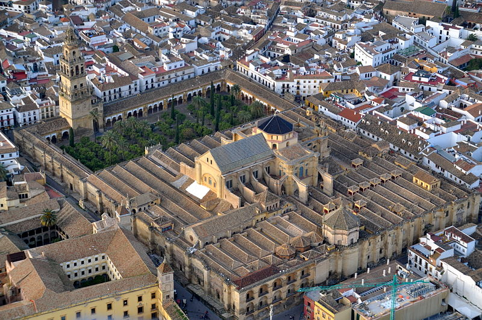
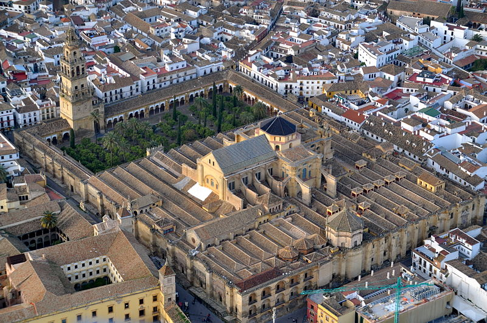

La mezquita de Córdoba
La mezquita de Córdoba
La Mezquita Catedral fue declarado Patrimonio dela Humanidad en 1984 es el resultado de ampliaciones e interpolaciones la primera cuando todavía era mezquita musulmana y la segunda sobre todo a partir de la transformación en templo cristiano las fuentes árabes cuentan que hasta la llegada de Abderramán primero los musulmanes cordobeses rezaban los viernes el día de oración común en la mezquita principal en la mitad sur de una iglesia visigoda que era compartida con los cristianos edificada con la Basílica de San Vicente quiero una cocina de restos bajo la primera mezquita estos restos se exponen en una cuántas piscinas dentro de la catedral el príncipe omeya Abderramán vino a la península de Damasco en Siria yendo de la venganza de dinastía reinante hapasil atashi independizó al del poder político de Oriente y tomo la decisión medio religiosa medio política de levantar una mezquita a partir del 785 al 86 líneas del nuevo emirato independiente. está primera mezquita costaba de una superficie cuadrada de 29 m de lado en dos partes el saco patio jornada jornada de arquerías sobre columnas que se aprovecha cocina romana y visigoda Abderramán segundo y el tercero agrandar en el recinto pero la intervención más suntuosa y aplaudida se hizo en 962,6 segundos la última ampliación servicio en el califato de San Segundo supervisión de Almanzor en el año nuevo 7 a causa de la proximidad del río hubo dedicarse en dirección al este aumentan también el patio donde se construyó un aljibe FIFA 1998 han sacado la luz la calle de la calle del muro este de la primera mezquita la ampliación de Almanzor 1236 tarde conquista de Córdoba por Fernando tercero el santo fue consagrada como templo cristiano bajo la advocación de Santa María siglo ante el rey Enrique segundo de Trastamara se realizaron la Capilla Real la decoración de la Puerta del Perdón iniciadas a la vez la construcción de las capillas privadas adosadas a los muros del recinto el siglo significa la primitiva capilla largo del siglo 16 la reforma a cargo de la familia de arquitectos arquitecto Hernán Ruiz la primera etapa se llevó a cabo entre 1505 y 2014 realmente al exterior entrenamiento 14 y la librería también varias capillas particulares entro en la Capilla Mayor y el coro Hernán Ruiz actividad se reprende en las obras durante la Copa de Don Francisco Reinoso en 3197 1101 canción del maestro Juan de Ochoa el 8 de septiembre de 1607 se inauguraron la nueva Capilla Mayor y el coro la mezquita cúpula superficie de unos 22423 metros cuadrados formando un rectángulo de 165 m de largo y 128 de ancho con los dos ámbitos islámico y Cristiano perfectamente diferenciadas al exterior por sobre la horizontalidad de la mezquita MGL volumen de la catedral musulmana muy compacta tiene los muros colocado a soga y tizón características de pasará más tarde a edificación es cordobesa de la época cristiana reforzados con contrafuertes entre lo que se abren las portadas entrecot del lado poniente con la incorporación de diseño acuático a principio del siglo 16 Hernán Ruiz 1º cómo se ve la Puerta de San Miguel especialmente interesante en la puerta llamada de San Esteban dama antigua el tiempo de Abderramán de Abderramán primero 308 perdón y la hermana por el siglo en el siglo 19